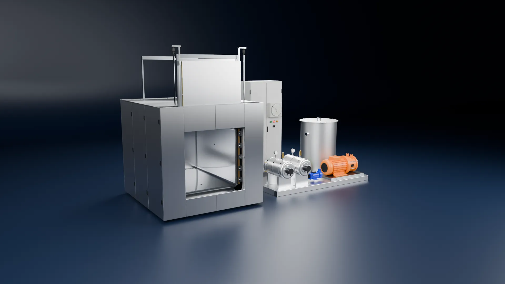
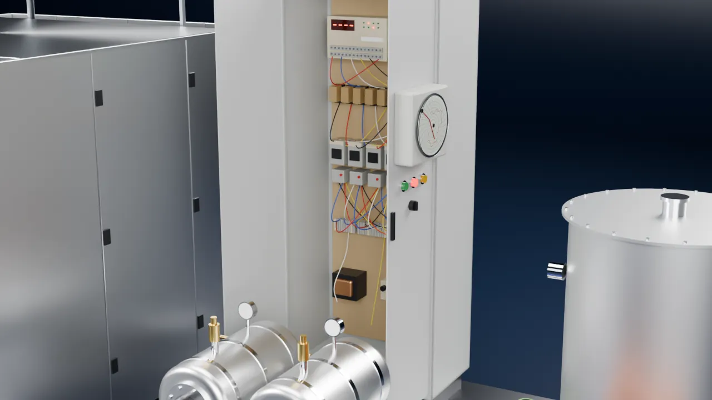
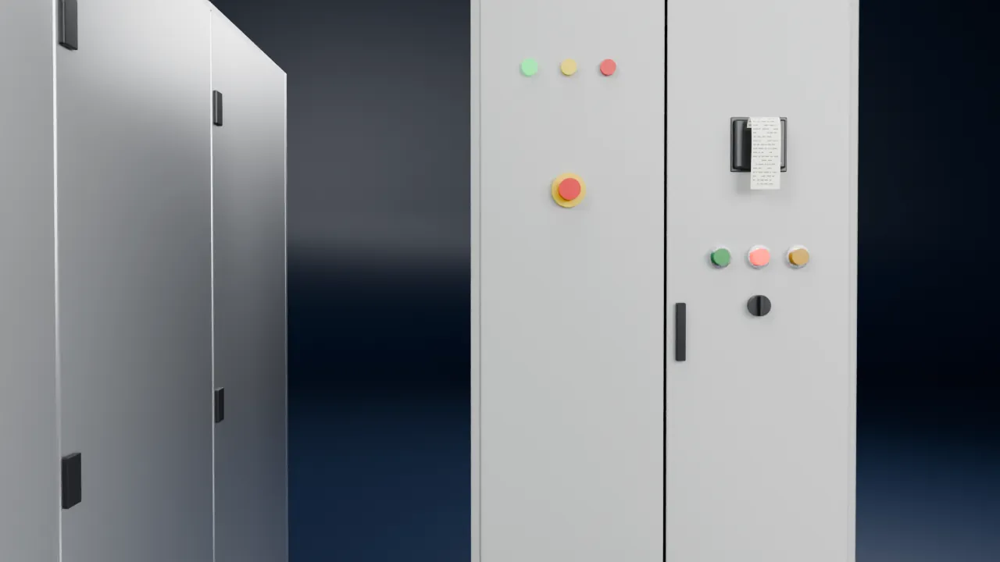
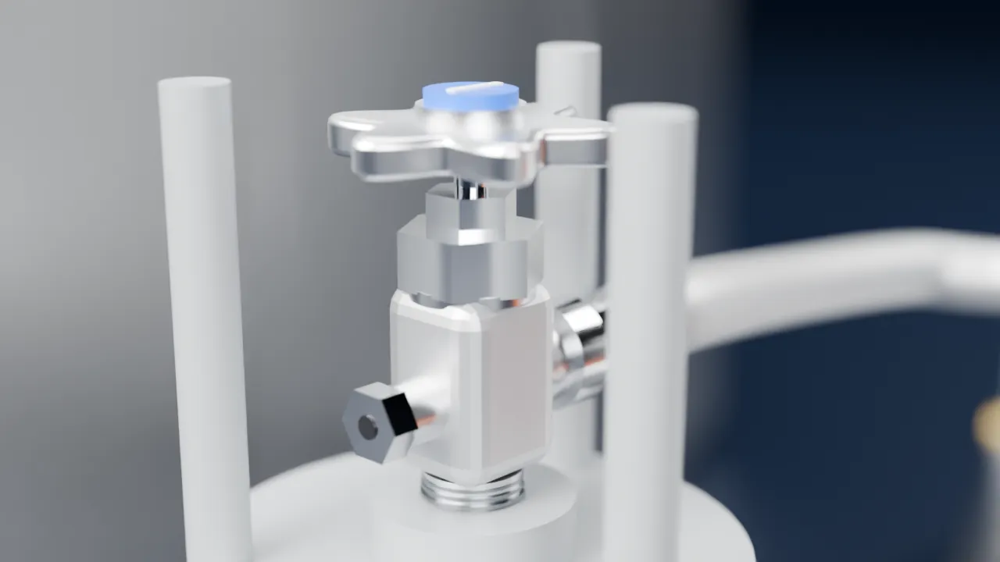

Retrofit de automação ETO: vida nova ao equipamento, conformidade ao processo
CLP e IHM novos, ciclo totalmente rastreável e validação do software pela Labquali.
Agendar avaliaçãoO vaso, as portas e as bombas continuam bons.
O que envelheceu foi a automação.

Quando o CLP para, a produção para
- O CLP foi descontinuado e a peça de reposição não existe mais.
- O programa está sem backup: se a memória falha, a lógica se perde.
- Ninguém na planta conhece a lógica do painel.
Cada parada é um lote retido, esperando liberação.
E na auditoria, a pergunta que o painel antigo não responde: cadê o registro deste ciclo?

Por dentro da nova automação
- Fica
- vaso, portas, bombas e camisa
- Troca
- automação e instrumentação
- 1IHM Delta DOP-107 7"
- 2CLP Delta DVP-SE com módulos PT100 e analógicos
- 3Fonte, bornes e relés de interface
- 4Comunicação Modbus TCP entre o CLP e a IHM
- 5Instrumentação nova: PT100, transdutor de pressão, umidade e balança do cilindro
Nove fases, um ciclo inteiro rastreado
Do aquecimento à hiperventilação, o CLP conduz cada fase e a IHM mostra em qual delas a carga está. A próxima cena para na quinta: a injeção de ETO.
- Aquecimento
- Leak test
- Acondicionamento
- Umidificação
- Injeção de ETO
- Exposição
- Lavagens N2
- Aeração
- Hiperventilação
Na quinta fase, quem decide quanto ETO entra é a balança.

ETO dosado por peso, não por estimativa
O cilindro fica sobre a balança. A injeção acontece em cinco degraus: a cada um, a válvula abre até a massa programada sair do cilindro, e a pressão da câmara sobe junto.
Modo massa · com balançaO relatório registra a massa exata injetada.
Vazamento? A balança detecta queda de massa com a válvula fechada.Injeção em 5 degraus de 0,18 kg: 0,90 kg de ETO injetados. A balança mostra o cilindro passando de 45,00 kg para 44,10 kg, e a pressão da câmara sobe de −0,480 bar para −0,330 bar.
Valores ilustrativos de um ciclo de demonstração